20051116_44615_0400_PP · overview
原生裁剪框：全图；计数：{'A0': {'TP': 286621, 'FN': 66264, 'FP': 24405}, 'B1': {'TP': 286405, 'FN': 66480, 'FP': 25919}, 'B2': {'TP': 286421, 'FN': 66464, 'FP': 25662}}
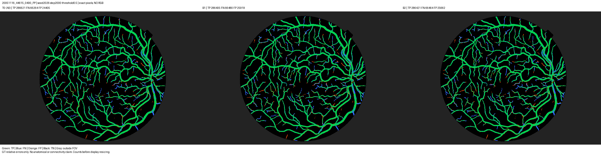
固定seed2026、2000步、阈值0.5；T0在B1/B2实验中记为A0。全部28张Dev图，沿用原图册87个全图/局部视图，不按本轮结果重新选例。仅显示相对GT的像素误差：绿=正确检出，蓝=漏检，橙=误报；没有RGB底图。颜色不是医学真伪判断，也不是d1骨架召回。
原始计数在缩放前计算；总览只用于定位，局部图可点击放大。MAPLES-DR标注：Lepetit-Aimon等，2024，CC BY；图谱由本项目CPU生成。数据来源。结果文件索引
原生裁剪框：全图；计数：{'A0': {'TP': 286621, 'FN': 66264, 'FP': 24405}, 'B1': {'TP': 286405, 'FN': 66480, 'FP': 25919}, 'B2': {'TP': 286421, 'FN': 66464, 'FP': 25662}}

原生裁剪框：[1536, 1024, 2048, 1536]；计数：{'A0': {'TP': 17159, 'FN': 3103, 'FP': 1229}, 'B1': {'TP': 16918, 'FN': 3344, 'FP': 1351}, 'B2': {'TP': 16985, 'FN': 3277, 'FP': 1346}}
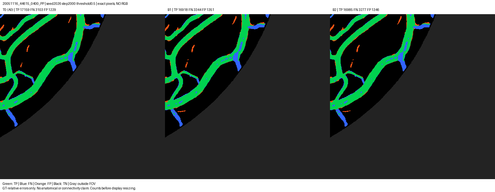
原生裁剪框：[1024, 512, 1536, 1024]；计数：{'A0': {'TP': 38228, 'FN': 10950, 'FP': 4138}, 'B1': {'TP': 38259, 'FN': 10919, 'FP': 4414}, 'B2': {'TP': 38235, 'FN': 10943, 'FP': 4389}}
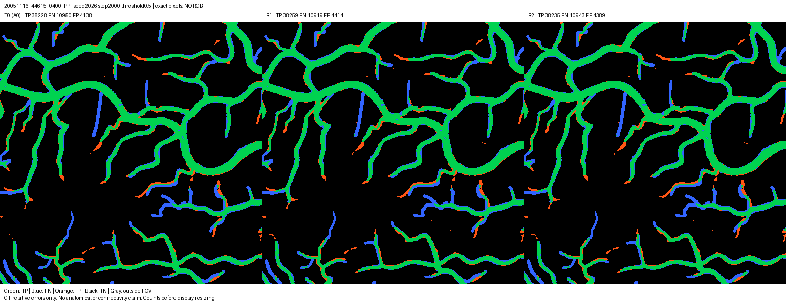
原生裁剪框：[1536, 512, 2048, 1024]；计数：{'A0': {'TP': 43848, 'FN': 12347, 'FP': 3972}, 'B1': {'TP': 43493, 'FN': 12702, 'FP': 4061}, 'B2': {'TP': 43606, 'FN': 12589, 'FP': 4018}}
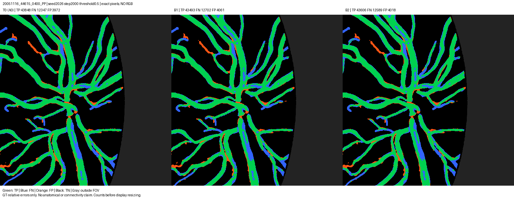
原生裁剪框：[1536, 1024, 2048, 1536]；计数：{'A0': {'TP': 17159, 'FN': 3103, 'FP': 1229}, 'B1': {'TP': 16918, 'FN': 3344, 'FP': 1351}, 'B2': {'TP': 16985, 'FN': 3277, 'FP': 1346}}

原生裁剪框：全图；计数：{'A0': {'TP': 234503, 'FN': 56447, 'FP': 38991}, 'B1': {'TP': 235590, 'FN': 55360, 'FP': 41039}, 'B2': {'TP': 235270, 'FN': 55680, 'FP': 40634}}
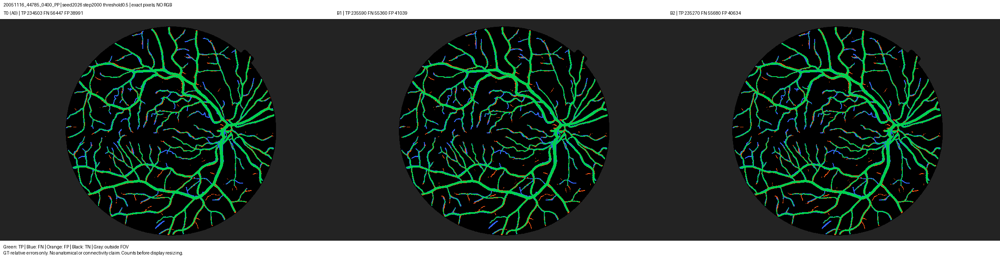
原生裁剪框：[1536, 1024, 2048, 1536]；计数：{'A0': {'TP': 6421, 'FN': 1403, 'FP': 1707}, 'B1': {'TP': 6444, 'FN': 1380, 'FP': 1944}, 'B2': {'TP': 6452, 'FN': 1372, 'FP': 1917}}
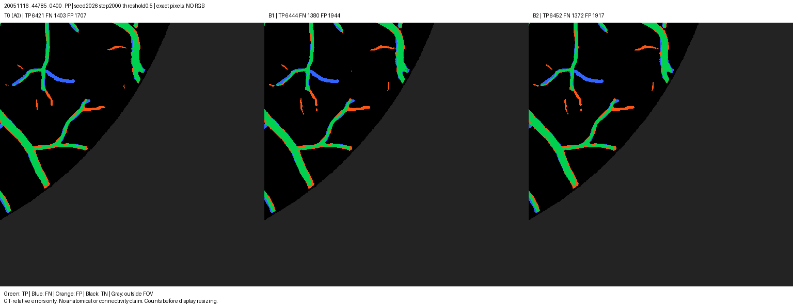
原生裁剪框：[1024, 1024, 1536, 1536]；计数：{'A0': {'TP': 37851, 'FN': 5801, 'FP': 7190}, 'B1': {'TP': 37990, 'FN': 5662, 'FP': 7542}, 'B2': {'TP': 37958, 'FN': 5694, 'FP': 7461}}
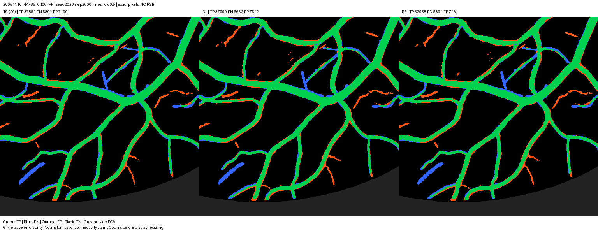
原生裁剪框：全图；计数：{'A0': {'TP': 94821, 'FN': 13615, 'FP': 23520}, 'B1': {'TP': 95830, 'FN': 12606, 'FP': 25478}, 'B2': {'TP': 95685, 'FN': 12751, 'FP': 25044}}
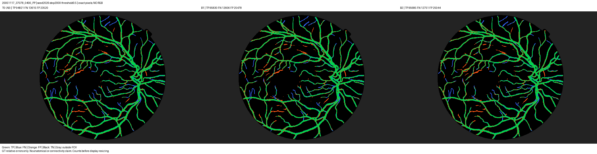
原生裁剪框：[512, 512, 1024, 960]；计数：{'A0': {'TP': 29144, 'FN': 5017, 'FP': 6275}, 'B1': {'TP': 29554, 'FN': 4607, 'FP': 6986}, 'B2': {'TP': 29480, 'FN': 4681, 'FP': 6820}}
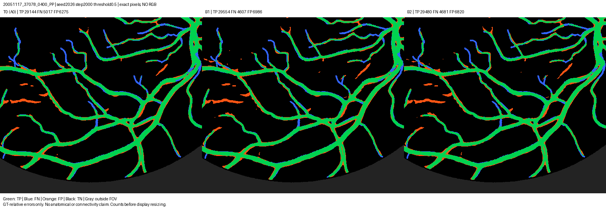
原生裁剪框：[512, 0, 1024, 512]；计数：{'A0': {'TP': 36904, 'FN': 4595, 'FP': 9422}, 'B1': {'TP': 37288, 'FN': 4211, 'FP': 10166}, 'B2': {'TP': 37229, 'FN': 4270, 'FP': 10001}}
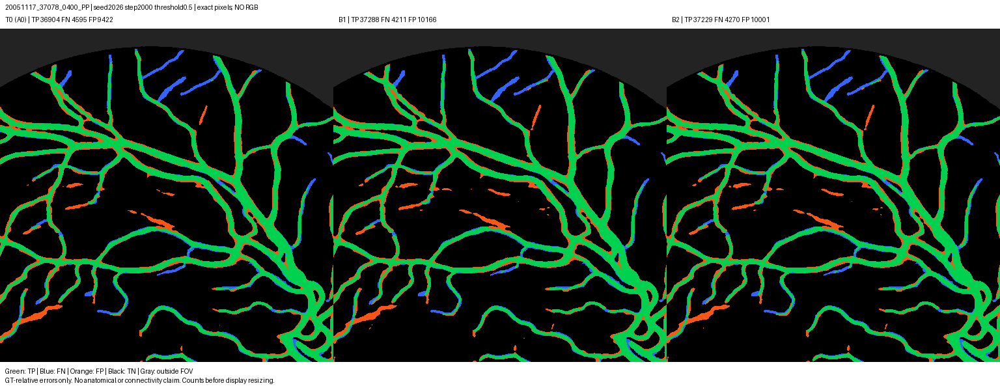
原生裁剪框：全图；计数：{'A0': {'TP': 70583, 'FN': 13730, 'FP': 19595}, 'B1': {'TP': 71520, 'FN': 12793, 'FP': 20940}, 'B2': {'TP': 71370, 'FN': 12943, 'FP': 20734}}
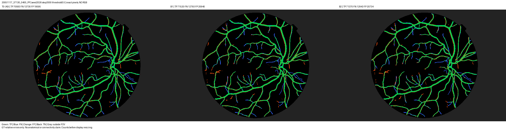
原生裁剪框：[0, 0, 512, 512]；计数：{'A0': {'TP': 5215, 'FN': 1316, 'FP': 2311}, 'B1': {'TP': 5319, 'FN': 1212, 'FP': 2455}, 'B2': {'TP': 5319, 'FN': 1212, 'FP': 2472}}
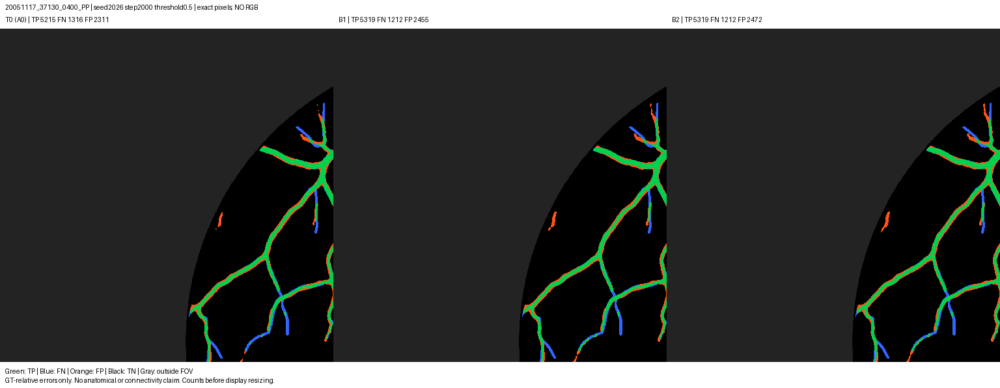
原生裁剪框：[512, 512, 1024, 960]；计数：{'A0': {'TP': 21996, 'FN': 4414, 'FP': 6161}, 'B1': {'TP': 22355, 'FN': 4055, 'FP': 6642}, 'B2': {'TP': 22304, 'FN': 4106, 'FP': 6550}}
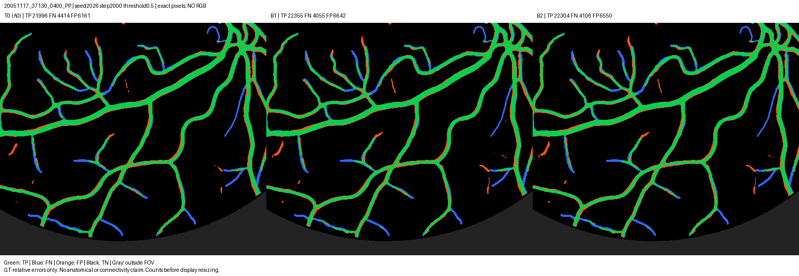
原生裁剪框：全图；计数：{'A0': {'TP': 181532, 'FN': 26708, 'FP': 34851}, 'B1': {'TP': 182466, 'FN': 25774, 'FP': 37456}, 'B2': {'TP': 182308, 'FN': 25932, 'FP': 36967}}
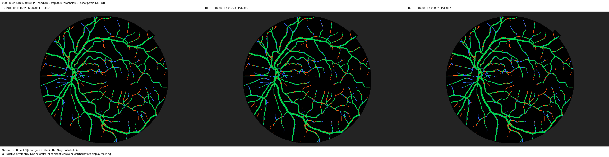
原生裁剪框：[1536, 512, 2048, 1024]；计数：{'A0': {'TP': 12833, 'FN': 2369, 'FP': 3543}, 'B1': {'TP': 12900, 'FN': 2302, 'FP': 3908}, 'B2': {'TP': 12885, 'FN': 2317, 'FP': 3873}}
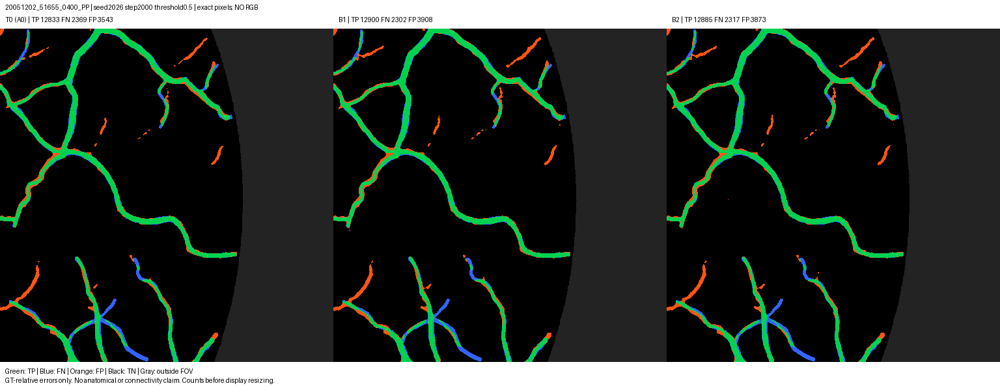
原生裁剪框：[1024, 0, 1536, 512]；计数：{'A0': {'TP': 23759, 'FN': 2586, 'FP': 3778}, 'B1': {'TP': 23888, 'FN': 2457, 'FP': 4236}, 'B2': {'TP': 23858, 'FN': 2487, 'FP': 4130}}
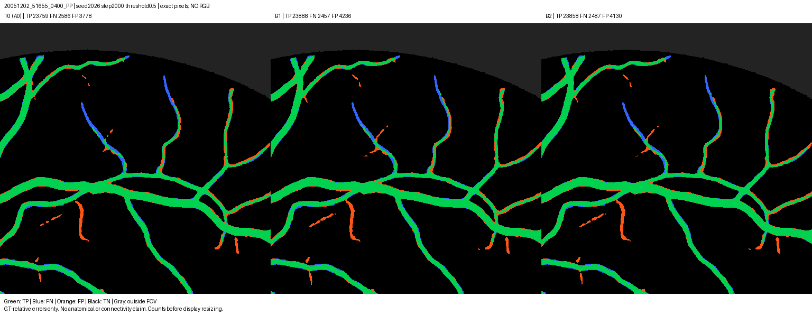
原生裁剪框：全图；计数：{'A0': {'TP': 80308, 'FN': 13114, 'FP': 17494}, 'B1': {'TP': 81491, 'FN': 11931, 'FP': 19106}, 'B2': {'TP': 81315, 'FN': 12107, 'FP': 18867}}
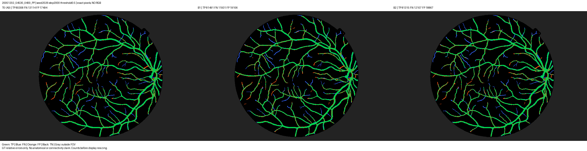
原生裁剪框：[512, 0, 1024, 512]；计数：{'A0': {'TP': 27788, 'FN': 5056, 'FP': 5967}, 'B1': {'TP': 28251, 'FN': 4593, 'FP': 6505}, 'B2': {'TP': 28196, 'FN': 4648, 'FP': 6428}}
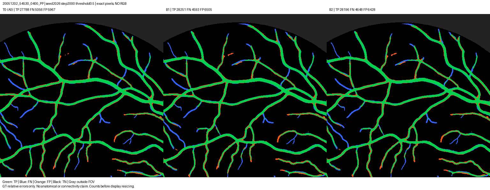
原生裁剪框：[512, 512, 1024, 960]；计数：{'A0': {'TP': 25121, 'FN': 3894, 'FP': 4723}, 'B1': {'TP': 25437, 'FN': 3578, 'FP': 5237}, 'B2': {'TP': 25371, 'FN': 3644, 'FP': 5146}}
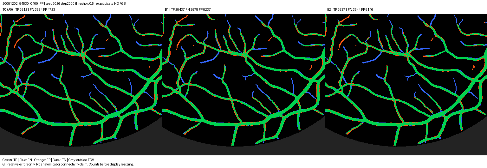
原生裁剪框：全图；计数：{'A0': {'TP': 227985, 'FN': 64901, 'FP': 23432}, 'B1': {'TP': 229880, 'FN': 63006, 'FP': 25345}, 'B2': {'TP': 229438, 'FN': 63448, 'FP': 24886}}
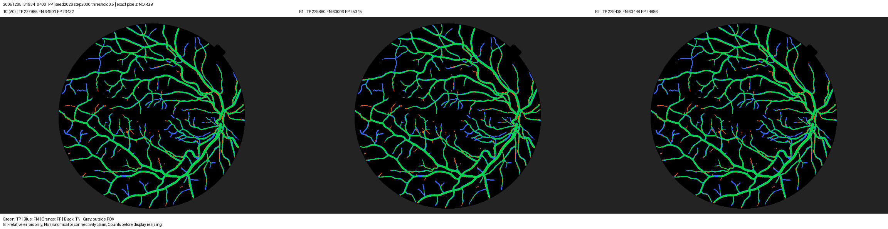
原生裁剪框：[1024, 0, 1536, 512]；计数：{'A0': {'TP': 38411, 'FN': 8296, 'FP': 3237}, 'B1': {'TP': 38622, 'FN': 8085, 'FP': 3525}, 'B2': {'TP': 38555, 'FN': 8152, 'FP': 3472}}
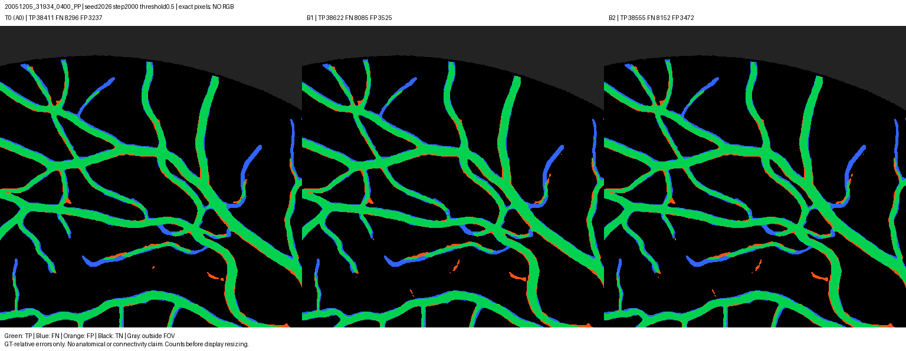
原生裁剪框：[512, 512, 1024, 1024]；计数：{'A0': {'TP': 29099, 'FN': 10886, 'FP': 4027}, 'B1': {'TP': 29317, 'FN': 10668, 'FP': 4365}, 'B2': {'TP': 29309, 'FN': 10676, 'FP': 4326}}
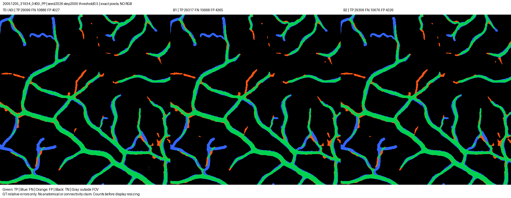
原生裁剪框：[1536, 512, 2048, 1024]；计数：{'A0': {'TP': 42577, 'FN': 7800, 'FP': 5965}, 'B1': {'TP': 42820, 'FN': 7557, 'FP': 6196}, 'B2': {'TP': 42720, 'FN': 7657, 'FP': 6080}}
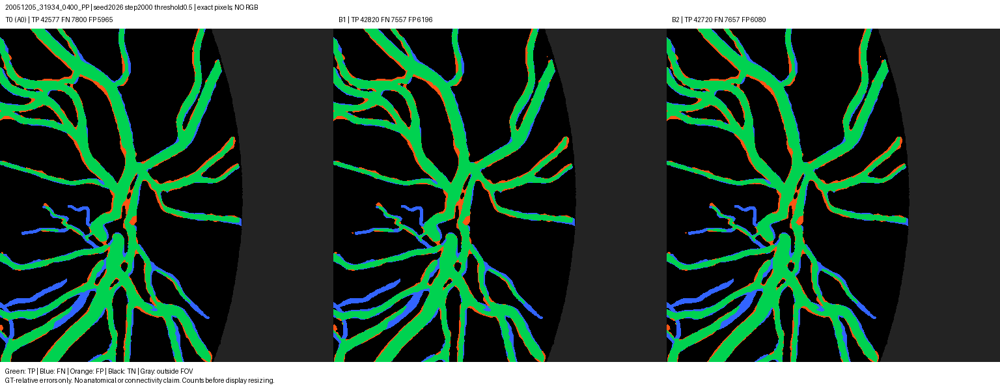
原生裁剪框：全图；计数：{'A0': {'TP': 55347, 'FN': 10896, 'FP': 36942}, 'B1': {'TP': 55756, 'FN': 10487, 'FP': 39946}, 'B2': {'TP': 55678, 'FN': 10565, 'FP': 39901}}
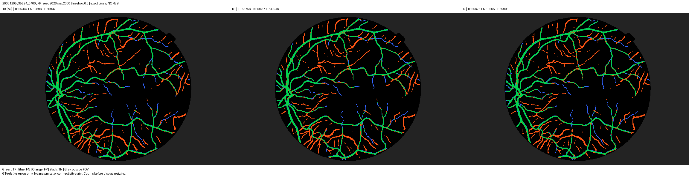
原生裁剪框：[512, 0, 1024, 512]；计数：{'A0': {'TP': 17201, 'FN': 3826, 'FP': 12136}, 'B1': {'TP': 17316, 'FN': 3711, 'FP': 13247}, 'B2': {'TP': 17302, 'FN': 3725, 'FP': 13306}}
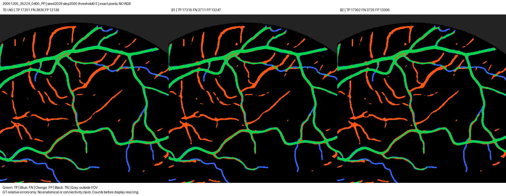
原生裁剪框：全图；计数：{'A0': {'TP': 75450, 'FN': 14598, 'FP': 15754}, 'B1': {'TP': 76580, 'FN': 13468, 'FP': 17639}, 'B2': {'TP': 76451, 'FN': 13597, 'FP': 17479}}
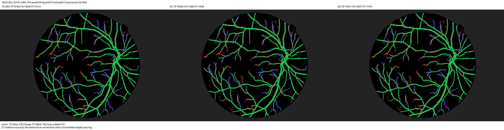
原生裁剪框：[0, 512, 512, 960]；计数：{'A0': {'TP': 5884, 'FN': 992, 'FP': 1169}, 'B1': {'TP': 5937, 'FN': 939, 'FP': 1316}, 'B2': {'TP': 5933, 'FN': 943, 'FP': 1291}}
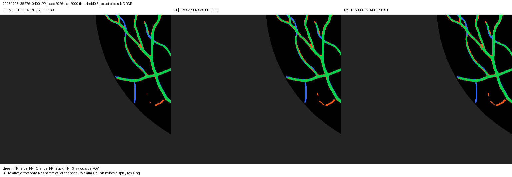
原生裁剪框：[512, 512, 1024, 960]；计数：{'A0': {'TP': 24954, 'FN': 5820, 'FP': 4898}, 'B1': {'TP': 25430, 'FN': 5344, 'FP': 5504}, 'B2': {'TP': 25367, 'FN': 5407, 'FP': 5468}}
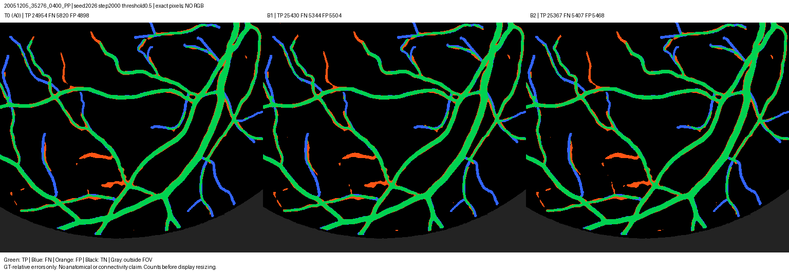
原生裁剪框：全图；计数：{'A0': {'TP': 51641, 'FN': 13579, 'FP': 13387}, 'B1': {'TP': 52094, 'FN': 13126, 'FP': 14727}, 'B2': {'TP': 52111, 'FN': 13109, 'FP': 14729}}
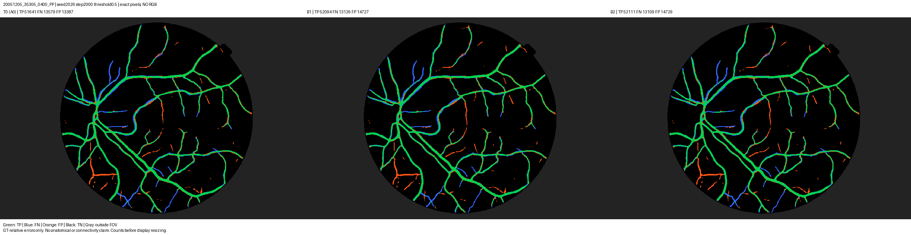
原生裁剪框：[512, 0, 1024, 512]；计数：{'A0': {'TP': 14073, 'FN': 5116, 'FP': 3951}, 'B1': {'TP': 14326, 'FN': 4863, 'FP': 4534}, 'B2': {'TP': 14318, 'FN': 4871, 'FP': 4518}}
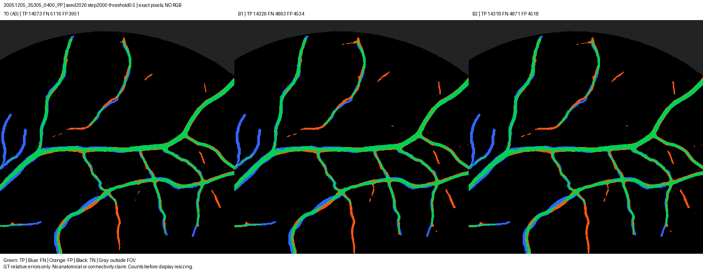
原生裁剪框：[512, 512, 1024, 960]；计数：{'A0': {'TP': 19388, 'FN': 4787, 'FP': 4663}, 'B1': {'TP': 19430, 'FN': 4745, 'FP': 5167}, 'B2': {'TP': 19421, 'FN': 4754, 'FP': 5170}}
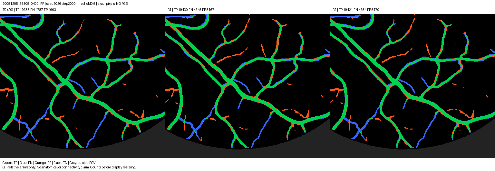
原生裁剪框：全图；计数：{'A0': {'TP': 190684, 'FN': 29993, 'FP': 33883}, 'B1': {'TP': 191513, 'FN': 29164, 'FP': 35753}, 'B2': {'TP': 191213, 'FN': 29464, 'FP': 35265}}
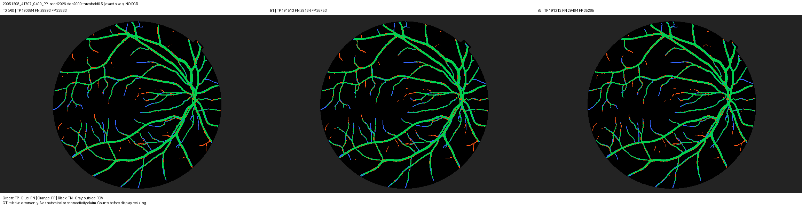
原生裁剪框：[1024, 1024, 1536, 1536]；计数：{'A0': {'TP': 26349, 'FN': 4940, 'FP': 4918}, 'B1': {'TP': 26527, 'FN': 4762, 'FP': 5376}, 'B2': {'TP': 26465, 'FN': 4824, 'FP': 5261}}

原生裁剪框：[1024, 512, 1536, 1024]；计数：{'A0': {'TP': 25467, 'FN': 5228, 'FP': 5190}, 'B1': {'TP': 25607, 'FN': 5088, 'FP': 5536}, 'B2': {'TP': 25572, 'FN': 5123, 'FP': 5495}}
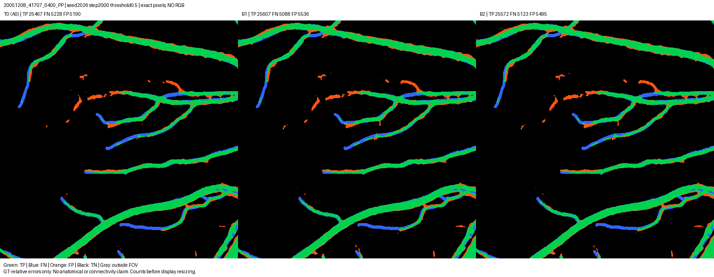
原生裁剪框：[1024, 1024, 1536, 1536]；计数：{'A0': {'TP': 26349, 'FN': 4940, 'FP': 4918}, 'B1': {'TP': 26527, 'FN': 4762, 'FP': 5376}, 'B2': {'TP': 26465, 'FN': 4824, 'FP': 5261}}
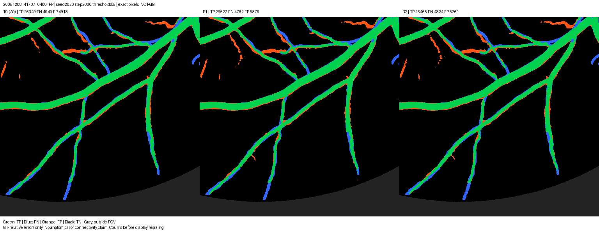
原生裁剪框：全图；计数：{'A0': {'TP': 92638, 'FN': 12610, 'FP': 13952}, 'B1': {'TP': 93597, 'FN': 11651, 'FP': 15753}, 'B2': {'TP': 93465, 'FN': 11783, 'FP': 15496}}
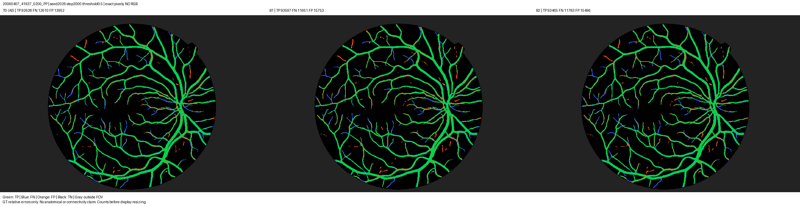
原生裁剪框：[512, 512, 1024, 960]；计数：{'A0': {'TP': 33433, 'FN': 3503, 'FP': 4302}, 'B1': {'TP': 33676, 'FN': 3260, 'FP': 4868}, 'B2': {'TP': 33633, 'FN': 3303, 'FP': 4770}}
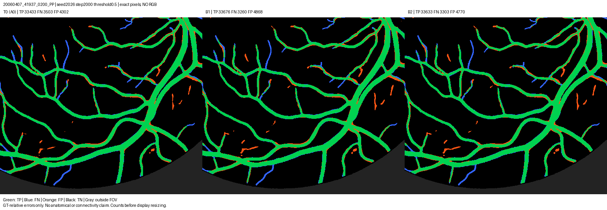
原生裁剪框：[512, 0, 1024, 512]；计数：{'A0': {'TP': 34670, 'FN': 4325, 'FP': 5519}, 'B1': {'TP': 35025, 'FN': 3970, 'FP': 6181}, 'B2': {'TP': 34972, 'FN': 4023, 'FP': 6076}}
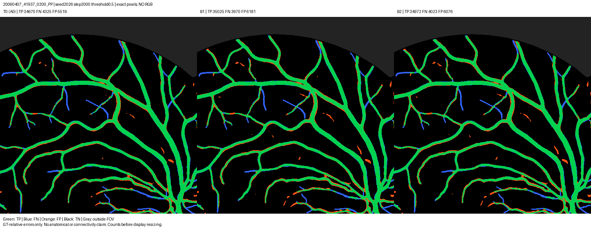
原生裁剪框：全图；计数：{'A0': {'TP': 91831, 'FN': 20780, 'FP': 12311}, 'B1': {'TP': 92803, 'FN': 19808, 'FP': 13695}, 'B2': {'TP': 92714, 'FN': 19897, 'FP': 13596}}
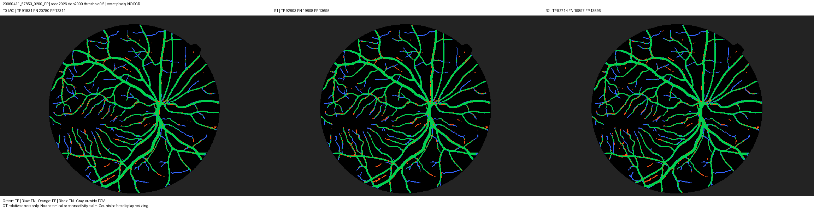
原生裁剪框：[512, 512, 1024, 960]；计数：{'A0': {'TP': 32968, 'FN': 6415, 'FP': 4227}, 'B1': {'TP': 33251, 'FN': 6132, 'FP': 4733}, 'B2': {'TP': 33198, 'FN': 6185, 'FP': 4667}}
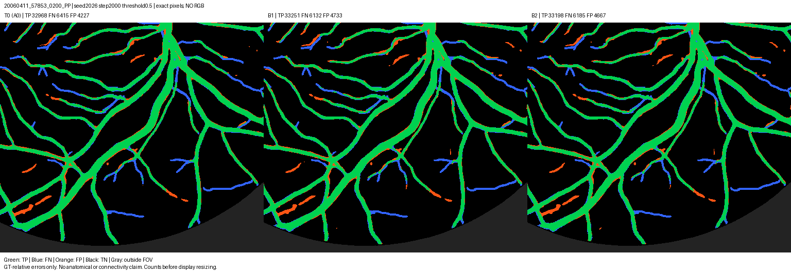
原生裁剪框：全图；计数：{'A0': {'TP': 88752, 'FN': 14562, 'FP': 13166}, 'B1': {'TP': 89478, 'FN': 13836, 'FP': 14653}, 'B2': {'TP': 89400, 'FN': 13914, 'FP': 14537}}
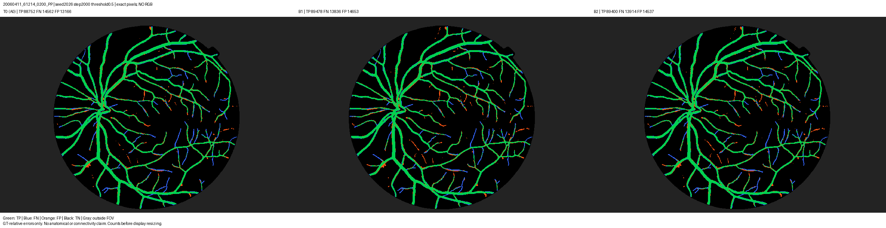
原生裁剪框：[512, 512, 1024, 960]；计数：{'A0': {'TP': 24596, 'FN': 5467, 'FP': 3910}, 'B1': {'TP': 24867, 'FN': 5196, 'FP': 4517}, 'B2': {'TP': 24836, 'FN': 5227, 'FP': 4485}}
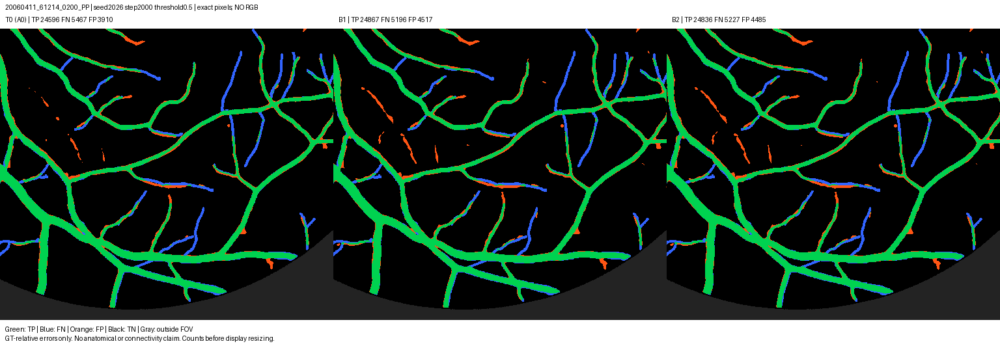
原生裁剪框：[512, 0, 1024, 512]；计数：{'A0': {'TP': 32140, 'FN': 4202, 'FP': 4978}, 'B1': {'TP': 32307, 'FN': 4035, 'FP': 5440}, 'B2': {'TP': 32285, 'FN': 4057, 'FP': 5387}}
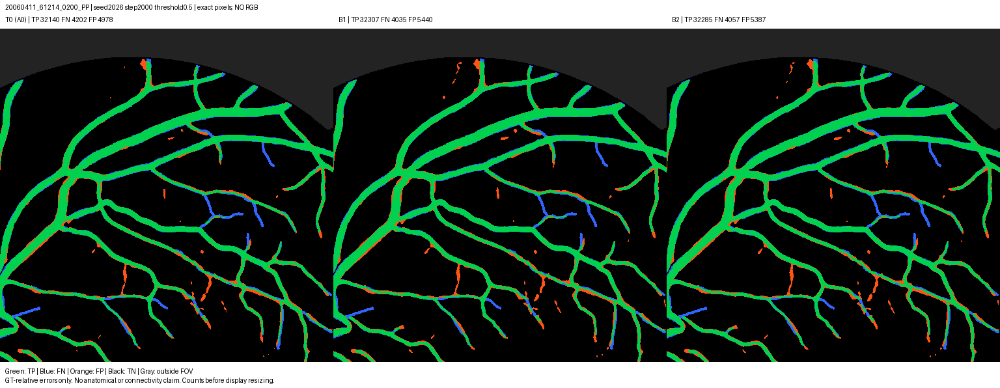
原生裁剪框：全图；计数：{'A0': {'TP': 84061, 'FN': 18464, 'FP': 11585}, 'B1': {'TP': 85079, 'FN': 17446, 'FP': 12959}, 'B2': {'TP': 85023, 'FN': 17502, 'FP': 12863}}
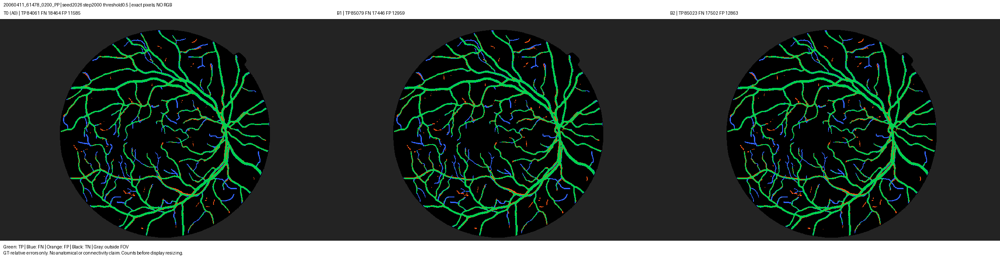
原生裁剪框：[0, 0, 512, 512]；计数：{'A0': {'TP': 8794, 'FN': 1937, 'FP': 981}, 'B1': {'TP': 8877, 'FN': 1854, 'FP': 1153}, 'B2': {'TP': 8874, 'FN': 1857, 'FP': 1155}}
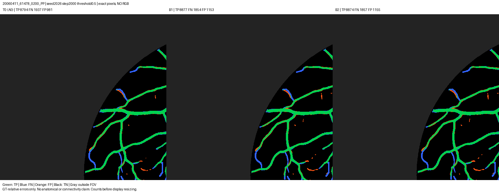
原生裁剪框：[512, 0, 1024, 512]；计数：{'A0': {'TP': 33194, 'FN': 6464, 'FP': 3816}, 'B1': {'TP': 33546, 'FN': 6112, 'FP': 4316}, 'B2': {'TP': 33506, 'FN': 6152, 'FP': 4270}}
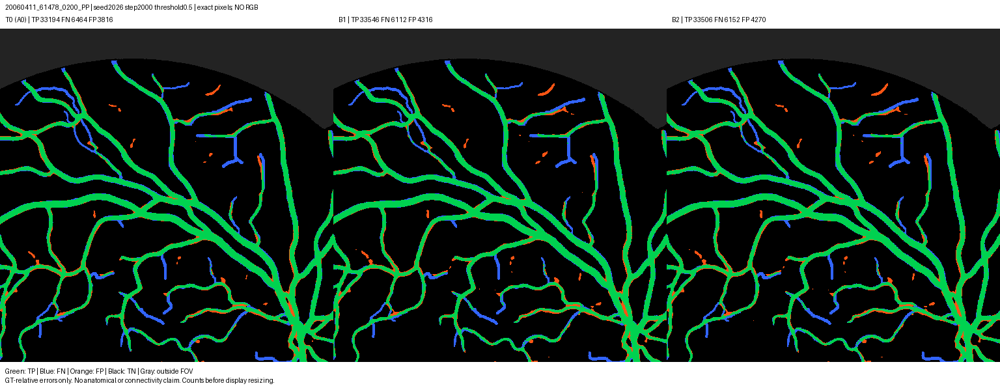
原生裁剪框：全图；计数：{'A0': {'TP': 86485, 'FN': 19218, 'FP': 12083}, 'B1': {'TP': 87494, 'FN': 18209, 'FP': 13517}, 'B2': {'TP': 87416, 'FN': 18287, 'FP': 13459}}
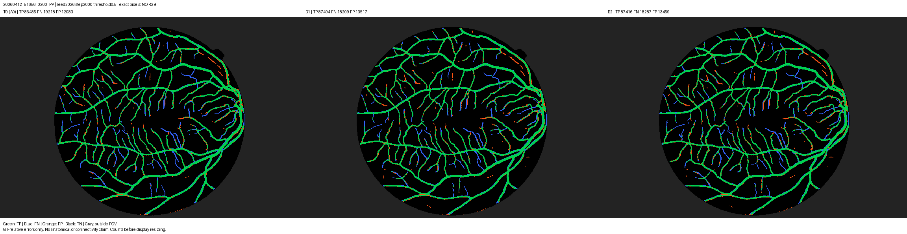
原生裁剪框：[1024, 512, 1440, 960]；计数：{'A0': {'TP': 5103, 'FN': 813, 'FP': 409}, 'B1': {'TP': 5140, 'FN': 776, 'FP': 510}, 'B2': {'TP': 5135, 'FN': 781, 'FP': 524}}
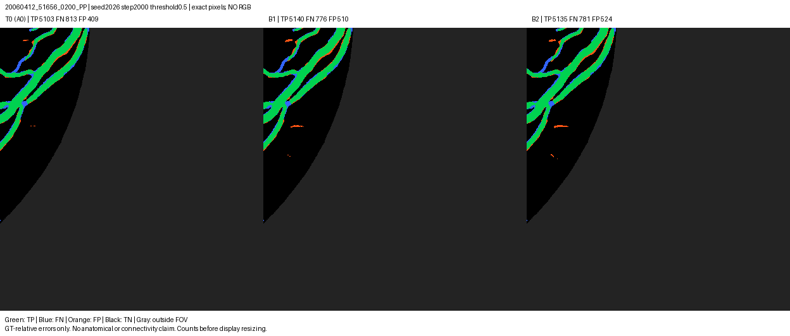
原生裁剪框：[512, 0, 1024, 512]；计数：{'A0': {'TP': 28412, 'FN': 5800, 'FP': 3992}, 'B1': {'TP': 28735, 'FN': 5477, 'FP': 4559}, 'B2': {'TP': 28706, 'FN': 5506, 'FP': 4527}}
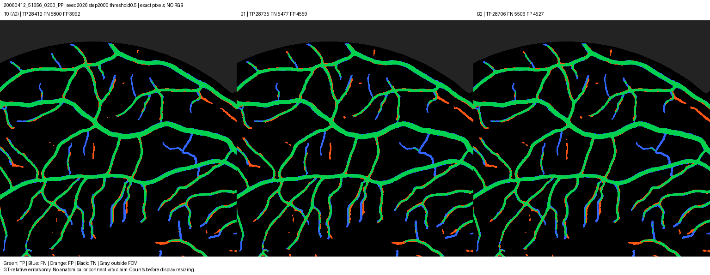
原生裁剪框：全图；计数：{'A0': {'TP': 107458, 'FN': 22551, 'FP': 13160}, 'B1': {'TP': 108739, 'FN': 21270, 'FP': 14495}, 'B2': {'TP': 108609, 'FN': 21400, 'FP': 14387}}
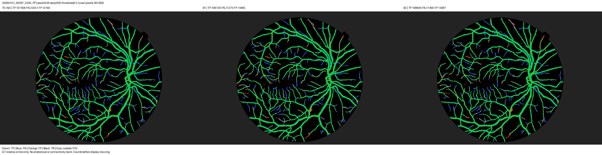
原生裁剪框：[512, 0, 1024, 512]；计数：{'A0': {'TP': 41879, 'FN': 7997, 'FP': 4162}, 'B1': {'TP': 42290, 'FN': 7586, 'FP': 4594}, 'B2': {'TP': 42221, 'FN': 7655, 'FP': 4535}}
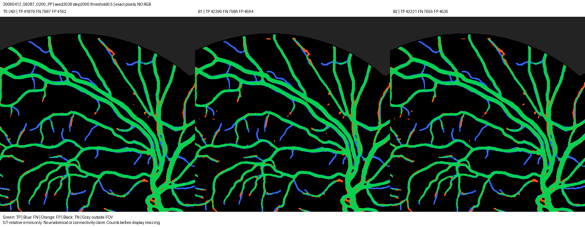
原生裁剪框：[512, 512, 1024, 960]；计数：{'A0': {'TP': 36647, 'FN': 7505, 'FP': 4169}, 'B1': {'TP': 37110, 'FN': 7042, 'FP': 4568}, 'B2': {'TP': 37046, 'FN': 7106, 'FP': 4499}}
原生裁剪框：全图；计数：{'A0': {'TP': 71148, 'FN': 16103, 'FP': 9882}, 'B1': {'TP': 71949, 'FN': 15302, 'FP': 11123}, 'B2': {'TP': 71841, 'FN': 15410, 'FP': 11159}}
原生裁剪框：[1024, 0, 1440, 512]；计数：{'A0': {'TP': 3546, 'FN': 1442, 'FP': 511}, 'B1': {'TP': 3645, 'FN': 1343, 'FP': 700}, 'B2': {'TP': 3647, 'FN': 1341, 'FP': 701}}
原生裁剪框：[512, 512, 1024, 960]；计数：{'A0': {'TP': 19178, 'FN': 4804, 'FP': 3042}, 'B1': {'TP': 19508, 'FN': 4474, 'FP': 3407}, 'B2': {'TP': 19437, 'FN': 4545, 'FP': 3426}}
原生裁剪框：全图；计数：{'A0': {'TP': 49630, 'FN': 13875, 'FP': 14013}, 'B1': {'TP': 50578, 'FN': 12927, 'FP': 15506}, 'B2': {'TP': 50394, 'FN': 13111, 'FP': 15330}}
原生裁剪框：[512, 0, 1024, 512]；计数：{'A0': {'TP': 13439, 'FN': 4789, 'FP': 3921}, 'B1': {'TP': 13918, 'FN': 4310, 'FP': 4563}, 'B2': {'TP': 13824, 'FN': 4404, 'FP': 4475}}
原生裁剪框：[512, 512, 1024, 960]；计数：{'A0': {'TP': 17678, 'FN': 4721, 'FP': 5864}, 'B1': {'TP': 17896, 'FN': 4503, 'FP': 6429}, 'B2': {'TP': 17879, 'FN': 4520, 'FP': 6369}}
原生裁剪框：全图；计数：{'A0': {'TP': 92069, 'FN': 21647, 'FP': 13384}, 'B1': {'TP': 93437, 'FN': 20279, 'FP': 15149}, 'B2': {'TP': 93314, 'FN': 20402, 'FP': 15009}}
原生裁剪框：[1024, 512, 1440, 960]；计数：{'A0': {'TP': 2701, 'FN': 804, 'FP': 397}, 'B1': {'TP': 2757, 'FN': 748, 'FP': 477}, 'B2': {'TP': 2755, 'FN': 750, 'FP': 475}}
原生裁剪框：[512, 0, 1024, 512]；计数：{'A0': {'TP': 34658, 'FN': 7847, 'FP': 5420}, 'B1': {'TP': 35065, 'FN': 7440, 'FP': 6113}, 'B2': {'TP': 35017, 'FN': 7488, 'FP': 6068}}
原生裁剪框：全图；计数：{'A0': {'TP': 205962, 'FN': 53469, 'FP': 21921}, 'B1': {'TP': 206550, 'FN': 52881, 'FP': 23590}, 'B2': {'TP': 206293, 'FN': 53138, 'FP': 23310}}
原生裁剪框：[512, 512, 1024, 1024]；计数：{'A0': {'TP': 41687, 'FN': 9103, 'FP': 5495}, 'B1': {'TP': 41732, 'FN': 9058, 'FP': 5847}, 'B2': {'TP': 41686, 'FN': 9104, 'FP': 5756}}
原生裁剪框：全图；计数：{'A0': {'TP': 166908, 'FN': 42244, 'FP': 35411}, 'B1': {'TP': 167078, 'FN': 42074, 'FP': 37460}, 'B2': {'TP': 167085, 'FN': 42067, 'FP': 37552}}
原生裁剪框：[512, 0, 1024, 512]；计数：{'A0': {'TP': 23713, 'FN': 3098, 'FP': 5999}, 'B1': {'TP': 23728, 'FN': 3083, 'FP': 6211}, 'B2': {'TP': 23731, 'FN': 3080, 'FP': 6241}}
原生裁剪框：[1024, 512, 1536, 1024]；计数：{'A0': {'TP': 20787, 'FN': 7465, 'FP': 7091}, 'B1': {'TP': 20877, 'FN': 7375, 'FP': 7422}, 'B2': {'TP': 20879, 'FN': 7373, 'FP': 7432}}
原生裁剪框：全图；计数：{'A0': {'TP': 190777, 'FN': 38527, 'FP': 19892}, 'B1': {'TP': 191559, 'FN': 37745, 'FP': 21441}, 'B2': {'TP': 191443, 'FN': 37861, 'FP': 21307}}
原生裁剪框：[1536, 512, 2048, 1024]；计数：{'A0': {'TP': 13073, 'FN': 4255, 'FP': 1143}, 'B1': {'TP': 13214, 'FN': 4114, 'FP': 1355}, 'B2': {'TP': 13186, 'FN': 4142, 'FP': 1337}}
原生裁剪框：[1024, 512, 1536, 1024]；计数：{'A0': {'TP': 27888, 'FN': 5997, 'FP': 3005}, 'B1': {'TP': 27997, 'FN': 5888, 'FP': 3346}, 'B2': {'TP': 27985, 'FN': 5900, 'FP': 3317}}
原生裁剪框：[512, 512, 1024, 1024]；计数：{'A0': {'TP': 42108, 'FN': 6774, 'FP': 4270}, 'B1': {'TP': 42266, 'FN': 6616, 'FP': 4550}, 'B2': {'TP': 42211, 'FN': 6671, 'FP': 4511}}
原生裁剪框：全图；计数：{'A0': {'TP': 219972, 'FN': 61812, 'FP': 24289}, 'B1': {'TP': 220940, 'FN': 60844, 'FP': 26921}, 'B2': {'TP': 220743, 'FN': 61041, 'FP': 26792}}
原生裁剪框：[1024, 1024, 1536, 1488]；计数：{'A0': {'TP': 28618, 'FN': 6392, 'FP': 4524}, 'B1': {'TP': 28694, 'FN': 6316, 'FP': 4975}, 'B2': {'TP': 28687, 'FN': 6323, 'FP': 5032}}
原生裁剪框：[1024, 0, 1536, 512]；计数：{'A0': {'TP': 35666, 'FN': 8979, 'FP': 3697}, 'B1': {'TP': 35860, 'FN': 8785, 'FP': 4336}, 'B2': {'TP': 35877, 'FN': 8768, 'FP': 4326}}
原生裁剪框：[1024, 512, 1536, 1024]；计数：{'A0': {'TP': 42703, 'FN': 11516, 'FP': 5110}, 'B1': {'TP': 42939, 'FN': 11280, 'FP': 5541}, 'B2': {'TP': 42875, 'FN': 11344, 'FP': 5480}}
原生裁剪框：全图；计数：{'A0': {'TP': 184985, 'FN': 48772, 'FP': 15004}, 'B1': {'TP': 186511, 'FN': 47246, 'FP': 17155}, 'B2': {'TP': 186076, 'FN': 47681, 'FP': 16804}}
原生裁剪框：[1024, 1024, 1536, 1488]；计数：{'A0': {'TP': 23354, 'FN': 4584, 'FP': 2323}, 'B1': {'TP': 23529, 'FN': 4409, 'FP': 2629}, 'B2': {'TP': 23472, 'FN': 4466, 'FP': 2577}}
原生裁剪框：[512, 512, 1024, 1024]；计数：{'A0': {'TP': 45866, 'FN': 12924, 'FP': 2202}, 'B1': {'TP': 46251, 'FN': 12539, 'FP': 2682}, 'B2': {'TP': 46139, 'FN': 12651, 'FP': 2630}}
原生裁剪框：全图；计数：{'A0': {'TP': 208560, 'FN': 68324, 'FP': 21222}, 'B1': {'TP': 210012, 'FN': 66872, 'FP': 23019}, 'B2': {'TP': 209780, 'FN': 67104, 'FP': 22753}}
原生裁剪框：[1024, 0, 1536, 512]；计数：{'A0': {'TP': 29589, 'FN': 10497, 'FP': 2538}, 'B1': {'TP': 29762, 'FN': 10324, 'FP': 2964}, 'B2': {'TP': 29743, 'FN': 10343, 'FP': 2913}}
原生裁剪框：全图；计数：{'A0': {'TP': 130982, 'FN': 29446, 'FP': 25348}, 'B1': {'TP': 131713, 'FN': 28715, 'FP': 27114}, 'B2': {'TP': 131597, 'FN': 28831, 'FP': 27098}}
原生裁剪框：[1536, 512, 2048, 1024]；计数：{'A0': {'TP': 11221, 'FN': 3280, 'FP': 2193}, 'B1': {'TP': 11228, 'FN': 3273, 'FP': 2370}, 'B2': {'TP': 11227, 'FN': 3274, 'FP': 2386}}
原生裁剪框：[1024, 512, 1536, 1024]；计数：{'A0': {'TP': 31328, 'FN': 6989, 'FP': 4673}, 'B1': {'TP': 31625, 'FN': 6692, 'FP': 5218}, 'B2': {'TP': 31669, 'FN': 6648, 'FP': 5205}}
原生裁剪框：全图；计数：{'A0': {'TP': 189259, 'FN': 33592, 'FP': 28063}, 'B1': {'TP': 190053, 'FN': 32798, 'FP': 30641}, 'B2': {'TP': 189865, 'FN': 32986, 'FP': 30365}}
原生裁剪框：[512, 512, 1024, 1024]；计数：{'A0': {'TP': 46018, 'FN': 9887, 'FP': 4653}, 'B1': {'TP': 46327, 'FN': 9578, 'FP': 5241}, 'B2': {'TP': 46256, 'FN': 9649, 'FP': 5158}}
原生裁剪框：[1024, 0, 1536, 512]；计数：{'A0': {'TP': 25229, 'FN': 3640, 'FP': 4547}, 'B1': {'TP': 25273, 'FN': 3596, 'FP': 5118}, 'B2': {'TP': 25252, 'FN': 3617, 'FP': 5091}}
原生裁剪框：[1024, 512, 1536, 1024]；计数：{'A0': {'TP': 23300, 'FN': 5776, 'FP': 7116}, 'B1': {'TP': 23472, 'FN': 5604, 'FP': 7526}, 'B2': {'TP': 23484, 'FN': 5592, 'FP': 7505}}